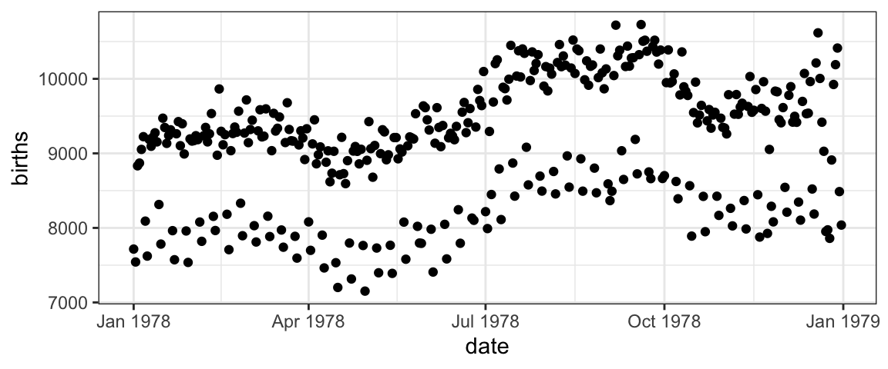
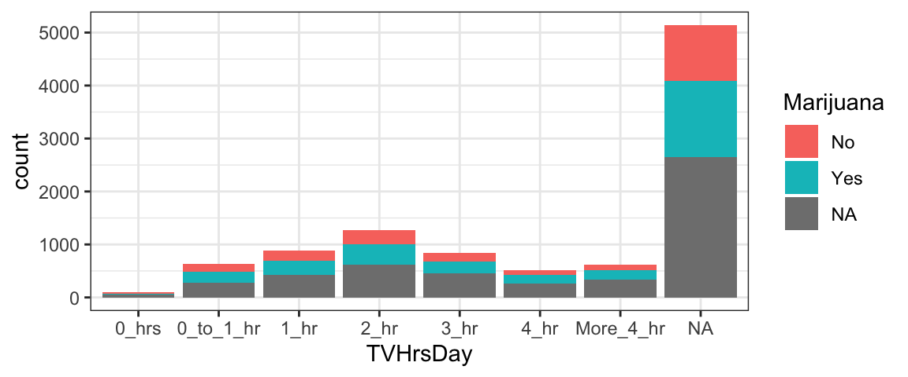
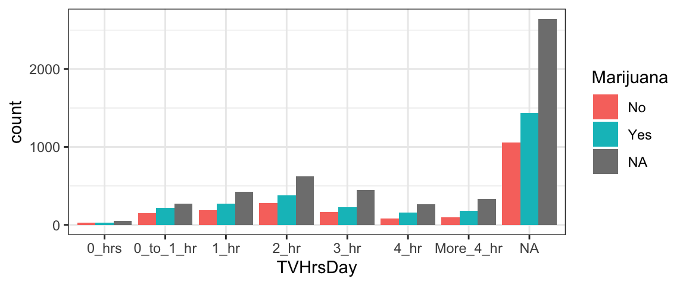
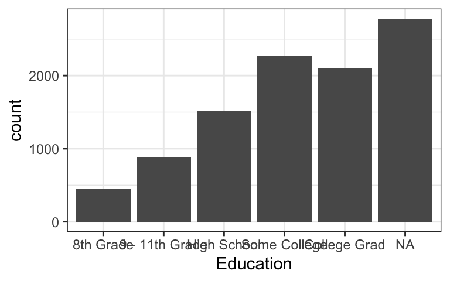

Acknowledgements
This tutorial was created based closely on the “Introduction” tutorial provided with the ggformula package. If desired you can access the original tutorial by running the code below in RStudio.
Note: Do NOT actually switch to R and run the code below…
unless you want to view the original tutorial! Instead, click “Next Topic” below to continue with this tutorial…
library(ggformula)
library(learnr)
learnr::run_tutorial("introduction", package = "ggformula")US Births in 1978
The plot below shows the number of live births in the United States each day of 1978. We are going to use it to learn how to create plots using the ggformula package.

But before we do that, take a look at the plot.
What patterns do you see in the plot?
Can you conjecture reasons for those patterns?
How might we improve the plot to test your conjectures?
Scatter plots with ggformula
Two important questions
To get R (or any software) to create this plot (or do anything else, really), there are two important questions you must be able to answer. Before continuing, see if you can figure out what they are.
The Questions
To get R (or any software) to create this plot, there are two important questions you must be able to answer:
1. What do you want the computer to do?
2. What must the computer know in order to do that?
Answers to the questions
To make this plot, the answers to our questions are
1. What do you want the computer to do?
A. Make a scatter plot (i.e., a plot consisting of points)
2. What must the computer know in order to do that?
A. The data used for the plot:
- The variable to be plotted along the \(y\) axis.
- The variable to be plotted along the \(x\) axis.
- The data set that contains the variables.
We just need to learn how to tell R these answers.
Plotting with Formulas
The Formula Template
We will provide answers to our two questions by filling in the boxes of this important template:
goal ( yyy ~ xxx , data = mydata )
We just need to identify which portions of our answers go into which boxes.
The Name of the Game
It is useful to provide names for the boxes:
goal ( y ~ x , data = mydata , …)
These names can help us remember which things go where. (The ... indicates that there are some additional arguments we will add eventually.)
Other versions
Sometimes we will add or subtract a bit from our formula. Here are some other forms we will eventually see.
# simpler version
goal( ~ x, data = mydata )
# fancier version
goal( y ~ x | z , data = mydata )
# unified version
goal( formula , data = mydata ) 2 Questions and the Formula Template
goal ( y ~ x , data = mydata )
Q. What do you want R to do? A. goal
- This determines the function to use.
- For a plot, the function will describe what sorts of marks to draw (points, in our example).
Q. What must R know to do that? A. arguments
- This determines the inputs to the function.
- For a plot, we must identify the variables and the data frame that contains them.
Assembling the pieces
Template
goal ( y ~ x , data = mydata )
Pieces
| box | fill in with | purpose |
|---|---|---|
goal
|
gf_point
|
plot some points |
y
|
births
|
y-axis variable |
x
|
date
|
x-axis variable |
mydata
|
Births1978
|
name of data set |
Your Turn
Put each piece in its place in the template below and then run the code to create the plot.
goal(y ~ x, data = mydata)If you get an “object not found” or “could not find function” error message, that indicates that you have not correctly filled in one of the four boxes from the template.
Note: R is case sensitive, so watch your capitalization.
For the record, here are the first few rows of Births1978.
Using formulas to describe plots
The tilde (wiggle)
The most distinctive feature of ggformula plots is the use of formulas to describe the positional information of a plot. Formulas in R always involve the tilde character, which is easy to overlook. It looks like this:
~
Make sure you know where the tilde is located on your computer’s keyboard! It is often near the upper left-hand corner on American keyboards.

Formula shapes
Most gf_ functions take a formula that describes the positional attributes of the plot. Using one of these functions with no arguments will show you the “shape” of the formula it requires.
Getting help on formula shapes
Run this code to see the formula shape for gf_point().
gf_point()You should see that gf_point()’s formula has the shape y ~ x, so the y-variable name goes before the tilde and the x-variable name goes after. (Think: “y depends on x”. Also note that the y-axis label appears farther left than the x-axis label.)
Order matters in formulas!
Reverse the roles of the variables, changing births ~ date to date ~ births. How does the plot change?
gf_point(births ~ date, data = Births1978)Spaces
Size Matters
There is a reason that key is biggest – you should use it a lot!.
R, People, and Spaces
R is not very picky about spaces.
- Any number of spaces is equivalent to a single space.
- Sometiems (but not always) spaces are optional.
My advice is to use spaces liberally. Even if R doesn’t care, it makes your code easier for people to read.
Always put at space around things like
+,*,~etc. (This is a place where R doesn’t care whether you have a space or not, but I recommend you do.)Always put a space after each comma
Never put a space between a function name and its parentheses (write
head(data)nothead (data))Use spaces and line breaks to make your code easy to read.
Mimic the examples you see in this tutorial.
Different types of plots
So far, we have created scatter plots using the function gf_point(). But there are many other gf_ functions that create different types of plots. There are also helper functions that can customize axis labels, make multi-panel plots, and more. The following sections will help you explore some of these gf_ functions.
Before getting started, just to get an idea of what is included in the ggformula package, run the code below to get a list of all the gf_ functions that exist (don’t worry - we won’t cover them all today!):
# list all functions starting gf_
apropos("gf_")Variety is the Spice of Life
In addition to a traditional scatterplot, there are other ways to represent the relationship between two quantitative variables. To make a different kind of plot, we simply replace gf_point() with a different goal.
Give it a try
Replace the second gf_point() with one of the following and see what happens:
gf_line()– connect the points with line segments (but don’t draw the points)gf_smooth()– a “smoother”gf_spline()– a different kind of smoothergf_lm()– lm stands for “linear model”
Which do you like best? Why?
For the moment, many of these are probably dangerous plot types. Why? Because the picture may look pretty, but you may not understand exactly what the function is doing with your dataset to get the picture. And you have to know what is being done to be sure it’s appropriate!
gf_point(births ~ date, data = Births1978)
gf_point(births ~ date, data = Births1978)Note: You can create multiple plots in the same code box, just put each one on a separate line. Then you can see multiple plots at once and compare them.
Stacking layers
Want to see two (or more) plots one “on top of” the other? Just add %>% at the end of one plot, and the next will be layered on top of it.
The symbol %>% is called a “pipe” because it lets you “send” the results of one operation to another operation. It comes in handy often!
gf_point(births ~ date, data = Births1978) %>%
gf_line(births ~ date, data = Births1978)Your turn
Change
gf_line()togf_smooth().Try adding a third layer.
Custom colors and transparency
Color can be a very important elemnt of a plot.
We can use color just to make our plots more beautiful (or to match our favorite color)
- We can use color to communicate more about the data.
We can adjust the colors (and several othre plot attributes) using the ... part of our template.
goal ( y ~ x , data = mydata , …)
The general form for things in ... is attribute = value.
For example,
color = "red"orfill = "navy"(note quotes) can be used to change the colors of things. (fillis typically used for regions that are “filled in” andcolorfor dots and lines.)alpha = 0.5(or any number between 0 and 1) will set the opacity for the objects being plotted (0 is completely transparent and 1 is completely opaque).
Some Examples
Here are some examples. Adjust color and alpha options to see how things change. We’ve inserted some line breaks to make the options easier to locate in the code.
gf_point(births ~ date, data = Births1978,
color = "navy")gf_point(births ~ date, data = Births1978,
alpha=0.5, color = "red")gf_point(births ~ date, data = Births1978,
size = 3, shape = 18,
alpha = 0.25, color = "purple")What attributes are available?
You can learn about the options available for a given plot layer using the “quick help” for a gf_ plotting function. You can find out more by reading the detailed help file produced with ?.
The code below will display the “quick help”. Have a look, then change it to use ? and get the full help file.
# "quick help" for gf_point()
gf_point()What are the color names?
Curious to know all the available color names? Run this code.
colors()A guide to R colors is also available online at http://research.stowers.org/mcm/efg/R/Color/Chart/ColorChart.pdf, if you want to preview which color goes with which name.
Mapping attributes
The births data in 1978 contains two clear “waves” of dots. One conjecture is that these are weekdays and weekends. We can test this conjecture by putting different days in different colors.
In the lingo of ggformula, we need to map color to the variable wday. Mapping and setting attributes are different in an important way.
color = "navy"sets the color to “navy”. All the dots will be navy.color = ~ wdaymaps color towday. This means that the color will depend on the values ofwday. A legend (aka, a guide) will be automatically included to show us which days are which.
Your Turn
Change the color argument so that it maps color to wday.
- Don’t forget the tilde (
~).
gf_point(births ~ date, data = Births1978, color = "navy")Other types of plots
fill and color work for other types of plot too. Experiment.
gf_line(births ~ date, data = Births1978, color = ~ wday)NHANES data
Time for some new data.
The NHANES dataset contains measurements from 10,000 human subjects in the National Health and Nutrition Evaluation Survey. To learn more about the data, try one or more of these:
?NHANESnames(NHANES)glimpse(NHANES)inspect(NHANES)
?NHANESBecause NHANES has so many more (and more kinds of) variables, we can create even more kinds of plots with NHANES.
Histograms
The basics
A histogram can help you visualize the distribution of one quantitative variable.
Histograms are bit different from scatter plots:
Instead of using
gf_point(), we will usegf_histogram(). (You probably guessed that.)We only need to tell R about one variable (the x-variable). R will calculate the information for the y-variable for us!
So we use a formula with only one variable in it:
~ x. (Notice thatxgoes on the right side.)
Practice with histograms
Try the example below as-is by hitting “Run Code”.
Now experiment with plotting different quantitative variables from the
NHANESdataset. (Remember you can use?ornames(NHANES)orglimpse(NHANES)to get the variable names and more information.)You can change the size of the bins using either
bins(the number of bins) orbinwidth(the width of the bins). Experiment with different bins. (If you don’t providebinsorbinwidthinformation, R will just make something up. You can usually do better if you take control.)To get density instead of counts on the y-axis, switch from function
gf_histogram()togf_dhistogram().
gf_histogram( ~ BPSysAve, data = NHANES, bins = 30)Density plots
A density plot is a smoothed contour tracing the shape of a dataset’s distribution. The gf_density() and gf_dens() functions produce these plots (in slightly different ways). To compare with a histogram apples-to-apples, we will use a density histogram (gf_dhistogram()).
gf_dhistogram( ~ BPSysAve, data = NHANES)
gf_dens( ~ BPSysAve, data = NHANES) Your turn
Use
%>%to overlay the two layers.Use
size = 2orsize = 3to make the density curve thicker.Change
gf_dens()togf_density().Can you make the density (use
gf_density()) plot a different color and partly transparent? That will make it easier to see the histogram.Replace
BPSysAvewith a different quantitative variable.
Boxplots and violin plots
Boxplots and violin plots provde a quick comparison of the distribution of a quantitative variable in different groups.
Give it a try
Run the code below to see how this works (You’re plotting systolic blood pressure for seven groups who watch different amounts of TV each day).
Change
gf_boxplot()togf_violin()and see what happens.Try changing the order of
xandyin the formula – what happens?If you are interested, try different variables. Remember,
ymust be quantitative (that is what you’ll make boxplots of) andxmust be categorical (that defines the groups).Change
gf_boxplot()togf_point(). What happens? Is this a useful plot?Now try
gf_jitter(). Can you figure out what this does? (You might like to setalphato a smallish number.)
gf_boxplot(BPSysAve ~ TVHrsDay, data = NHANES)Note: If you haven’t seen these plots before, we will talk more about what they are later.
Just one variable?
Both gf_boxplot() and gf_violin() require a two-sided formula, so if you want to plot just one quantitative variable you have to replace the \(x\) in the formula with empty quotes "".
gf_boxplot( BPSysAve ~ "", data = NHANES)Boxplots are usually most useful to compare the distribution of a variable between several groups. (If we have only one variable, we can use histograms or density plots instead.)
Bar graphs
Bar graphs help visualize the distribution of a categorical variable, and we can create them with gf_bar().
gf_bar( ~ TVHrsDay, data = NHANES)Percents and Proportions?
What if we want to show the percent or proportion in each category, rather than the number of observations? gf_percents() and gf_props() to the rescue! Try changing the function from gf_bar() to gf_percents() or gf_props() and see what happens.
You can also add an ‘h’ at the end of each function to make the plots ‘horizontal’ with gf_barh(), gf_propsh(), and gf_percentsh(). Try that too!
gf_bar( ~ TVHrsDay, data = NHANES)gf_props( ~ TVHrsDay, data = NHANES)gf_percents( ~ TVHrsDay, data = NHANES)gf_percentsh( ~ TVHrsDay, data = NHANES)Your Turn
- Create a bar graph for a different (categorical) variable.
- What happens if you use a quantitative variable?
gf_bar( ~ TVHrsDay, data = NHANES)Bar graphs by groups
What if you want to show a set of proportions for each of several groups? For example, the NHANES data also includes a variable Marijuana that indicates whether the person has used marijuana. Is there a relationship?
gf_bar( ~ TVHrsDay | Marijuana, data = NHANES)
Stacked bar graphs
What if, instead of one figure panel per group, you want to see a stacked bar graph for the same data? Here’s an example. You use the input
fill= ~ variable_nameto specify the name of the variable that defines the groups (here,Marijuana).
gf_bar( ~ TVHrsDay, fill = ~ Marijuana, data = NHANES)
Side-by-Side bar graphs
What if, instead of stacked bars, you want side-by-side bars? Simply add the additional argument
position='dodge'.
gf_bar( ~ TVHrsDay, fill = ~ Marijuana, data = NHANES, position = 'dodge')
Other groups?
Try to make a similar plot to one or more of the bar graph variations shown above, but using a variable other than Marijuana to specify the groups. First, we will look at the head() of the dataset to see what variables are there - then it’s up to you to choose one to plot, and modify the code above to make the figure.
head(NHANES)Bar graph with pre-tabulated data
Sometimes, you may be given data that is already tabulated. Instead of a dataset with one row for every case, you will have one row for every group, and a variable that gives the number of observations in each group. For example, the simple dataset below is pre-tabulated:
We can use the function gf_col to make a bar graph of pre-tabulated data. This function always expects the counts as the y part of the formula, and the group names as x (after the tilde).
gf_col(count ~ group, data = D)Multiple layers with %>%
We said that gf_point() creates a plot with points. This isn’t quite true. Technically, it creates a layer with points. A single plot may have multiple layers. For example, you might want a scatter plot with a trend line overlaid on it, or a histogram with a standard normal curve overlaid.
To create a multi-layered plot, simply append %>% at the end of the code for one layer and follow that with another layer. (The %>% symbol is called a “pipe” because it sends the results of one operation on to the next operation for further processing)
Exercise
- If you run the following code as is, you will get two separate plots.
- Combine these two layers into a single plot by appending
%>%at the end of the first line. - Try adding another layer for a third variable.
gf_density(~ BPSysAve, data = NHANES)
gf_density(~ BPDiaAve, data = NHANES, fill = "blue")Facets (Multi-panel plots)
If we want to look at all 20 years of birth data, overlaying the data is likely to put too much information in too little space and make it hard to tell which data is from which year. (Even with good color and symbol choices, deciphering 20 colors or 20 shapes is hard.) Instead, we can put each year in separate facet or sub-plot. By default the coordinate systems will be shared across the facets which can make comparisons across facets easier.
There are two ways to create facets. The simplest way is to add a vertical bar | to our formula.
gf_point(births ~ day_of_year | year, data = Births, size = 0.5)The second way is to add on a facet command using %>%:
gf_point(births ~ day_of_year, data = Births, size = 0.5) %>%
gf_facet_wrap( ~ year)Practice with facets
Edit the plot below to:
- make one facet for each day of the week (
wday) - map color to
year
gf_point(births ~ day_of_year, data = Births,
size = 0.5, color = "blue")gf_point(births ~ day_of_year | wday, data = Births,
size = 0.5, color = ~ year)Facet Grids and Facet Wraps
The faceting we did on the previous page is called facet wrapping. If the facets don’t fit nicely in one row, the facets continue onto additional rows.
A facet grid uses rows, or columns, or both in a fixed way.
Notice that after the | there is now a formula instead of a single variable. Try generating the plot below - can you figure out what the formula does? If you need a hint, try changing year ~ wday to wday ~ year and see what happens…
gf_point(births ~ day_of_year | year ~ wday, data = Births, size = 0.5)The facet grid formula
Hopefully, you figured out that the facet grid formula is interpreted as “row variable ~ column variable” – the resulting plot will have one row of facets for every value of the first variable, and one column of facets for every value of the second variable.
Pracice with the facet grid formula
Recreate the plot below using gf_facet_grid(). This works much like gf_facet_wrap() and accepts a formula with one of three shapes
y ~ x(facets along both axes)~ x(facets only along x-axis)y ~ .(facets only along y-axis; notice the important dot in this one)
(These three formula shapes can also be used on the right side of |.)
gf_bar( ~ TVHrsDay | Marijuana ~ Gender, fill = ~ Marijuana, data = NHANES)Feel free to try some other variables or other types of plots.
More Practice
If you got this far, maybe it’s time to explore on your own! Here are three data sets you can use.
HELPrcthas data from a study of people addicted to alcohol, cocaine, or heroineKidsFeethas information about some kids’ feet.NHANEShas lots of physiologic and other measurements from 10,000 subjects in the National Health and Nutrition Evaluation Survey.
To find out more about the data sets use ?HELPrct, ?KidsFeet, or ?NHANES. To see the first few rows of the data, you can use head().
To get a list of functions available in ggformula, run this code chunk.
# list all functions starting gf_
apropos("gf_")Your Turn
Make some plots to explore one or more of these data sets.
- Experiment with different types of plots.
- Use mapping and/or facets to reveal groups.
- You can put more than one plot in a code chunk, but we’ve provided two chunks in case you want to separate your work that way. Use one chunk for experimenting and copy and paste your favorites to the other chunk if you like.
gf_point(length ~ width, data = KidsFeet)
head(KidsFeet)
?KidsFeetPost your favorite plot here by making a new slide in this google presentation:
More Customization
You may be wondering how to have more control over things like:
- the colors, shapes, and sizes chosen when mapping attributes
- labeling, including titles and axis labels
- fonts, colors, and sizes of text
- color of plot elements like background, gridlines, facet labels, etc.
As you can imagine, all of these things can be adjusted pretty much however you like. We will cover a few of the most common options here.
Custom axis labels
One of the most common customizations you will want to make to your plots will be to change the title, subtitle, and axis labels (and maybe add a caption). All these things can be done by chaining (%>%) the function gf_labs() with a plot layer.
Check out the example below, and try changing the text labels to ones that make sense to you. Note that all the input arguments to gf_labs are optional. So, for example, you could alter only the x-axis label by chaining the command gf_labs(x='My X Axis Label') with your plot.
gf_bar(~Race1, data=NHANES) %>%
gf_labs(title = "Race in NHANES Data",
subtitle = "(2009-2012)",
caption = "These data were collected by the US National Center for Health Statistics (NCHS), which has conducted a series of health and nutrition surveys since the early 1960's.",
x = "", # empty quotes here results in no x-axis label!
y = "Number of Observations"
)Custom axis limits
One way to zoom in (or out) is to filter the dataset so that only the data you wish to plot is included.
You can also use gf_lims() to set custom x and y axis limits.
- Try different axis limits to see how the plot changes.
- What happens if you set the min or max value for an axis to NA? (Hint: compare the plot to a plot with no custom axis limits.)
- What happens if you set the axis limits to be c(max, min) instead of c(min,max)?
gf_point(births ~ day_of_year, data = Births1978) %>%
gf_lims(x = c(100, 200), y = c(8000, 9000))Axis Labels that Don’t Fit
Sometimes - particularly for bar graphs of categorical variables with long category names - axis tick labels overlap in an ugly way. For example:
gf_bar(~Education, data=NHANES)
Flip the Axes
One simple way to solve this problem is to flip the x and y axes of the plot.
gf_bar(~Education, data=NHANES) %>%
gf_refine(coord_flip())
Rotate the Labels
Another solution is to rotate the axis labels. We can do that by modifying the angle and hjust values for the x tick labels in the plot’s theme. angle is the angle in degrees by which to rotate the labels, and hjust moves them up and down (positive hjust moves down, and negative moves up). For example:
gf_bar(~Education, data=NHANES) %>%
gf_theme(axis.text.x=element_text(angle=65, hjust=1))
Your Turn!
The dataset at http://sldr.netlify.com/data/MammalMetabolicRates.csv provides data on mammal metabolic rates. Read it in and make a bar graph of the number of observations per Order (or per Family, Genus, or Species) with legible axis tick labels.
Figure size in RMarkdown
You will almost certainly want to adjust figure sizes in your own RMarkdown documents. There are several ways - you can set a file-wide default in the header of the Rmd file as is done in the STAT homework template - or you can set the figure size for one R code chunk in the chunk header, as shown below.
The values of fig.width and fig.height are expected to be given in inches, by default.

But I like numbers!
Numerical summaries can be obtained using the same template we used for plots, so there is almost nothing to learn.
Look how similar these are. (I’ve inserted some spaces to make it even more obvious.) The first of these creates side by side boxplots. The second does side-by-side means.
gf_boxplot(BPSysAve ~ TVHrsDay, data = NHANES)
mean(BPSysAve ~ TVHrsDay, data = NHANES)One template to rule a lot
Not quite as good as Frodo’s ring, but our template is pretty powerful.
goal ( y ~ x , data = mydata , …)
We can use it for all sorts of numerical and graphical summaries of data. (And later in the course we will use it for statistical modeling as well.)